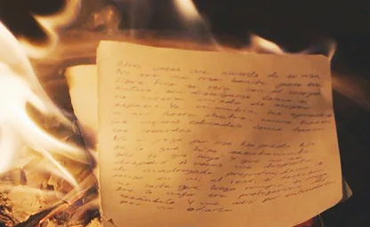
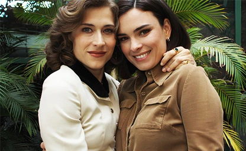
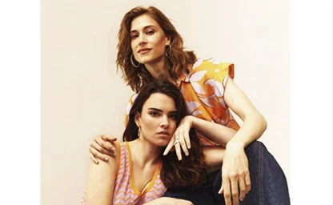
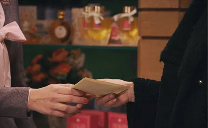
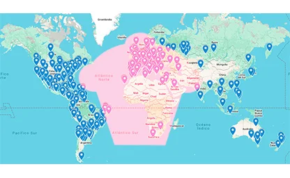

Primera aparición
La primera conversación de Marta y Fina a solas ocurre en el episodio 1 para la versión de HBO Latam, y en el 5 en la versión original de España.
La primera conversación de Marta y Fina a solas ocurre en el episodio 1 para la versión de HBO Latam, y en el 5 en la versión original de España.
El origen del nombre "Mafin" 🧁 fue por medio de una votación por encuesta oficial el 22 de Marzo 2024.
MaFin tiene su canción original (creada por Juan Navazo) y fue presentada oficialmente en el Día del Orgullo (28.06.25). Se llamó "Marta y Fina", para en 2026 pasar a llamarse "Pasión oculta".
Mejor Pareja 2025 y Mejor Primer Beso 2024 en los Premios Telenovela de la revista Telenovela.
Vuelve a disfrutar los mejores momentos por temporada con links, fechas y detalles:

Si te perdiste una temporada, aquí el resumen tiene la información que necesitabas. Además podrás encontrar los detrás de escena.

Accede a ver las entrevistas que han brindado Alba y Marta hablando sobre Mafin desde 2024.

Encuentra la filmografía y biografía de Marta Belmonte y Alba Brunet, así como dónde puedes ver el contenido.

Curiosidades sobre Mafin, la historia, guiones, detrás de escena, el fandom y más.

@DaryaBLR en X, creó un Mapa en Google donde se pueden ver los muchos países desde donde las fans siguen la historia. ¡Encuentra el tuyo! ♥︎